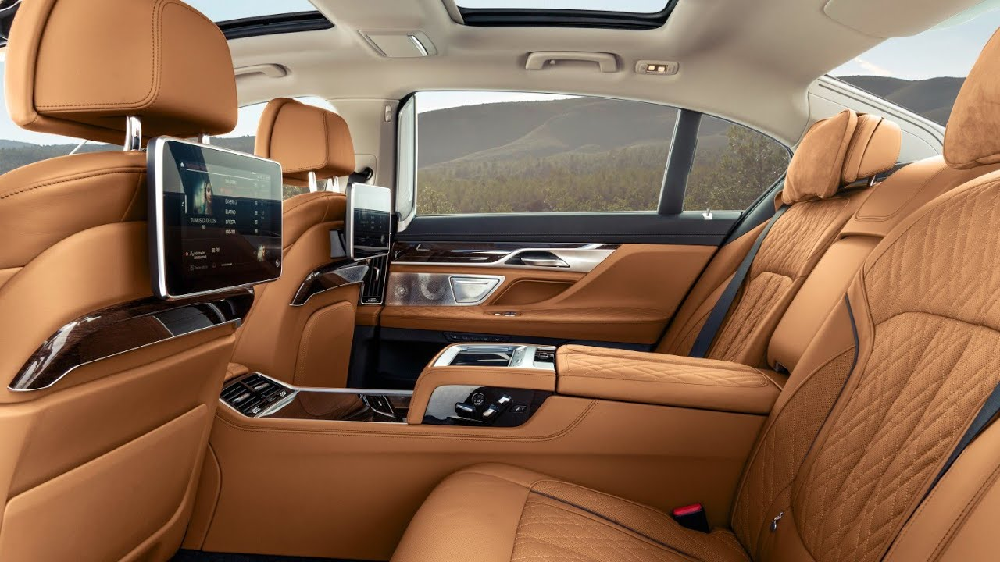
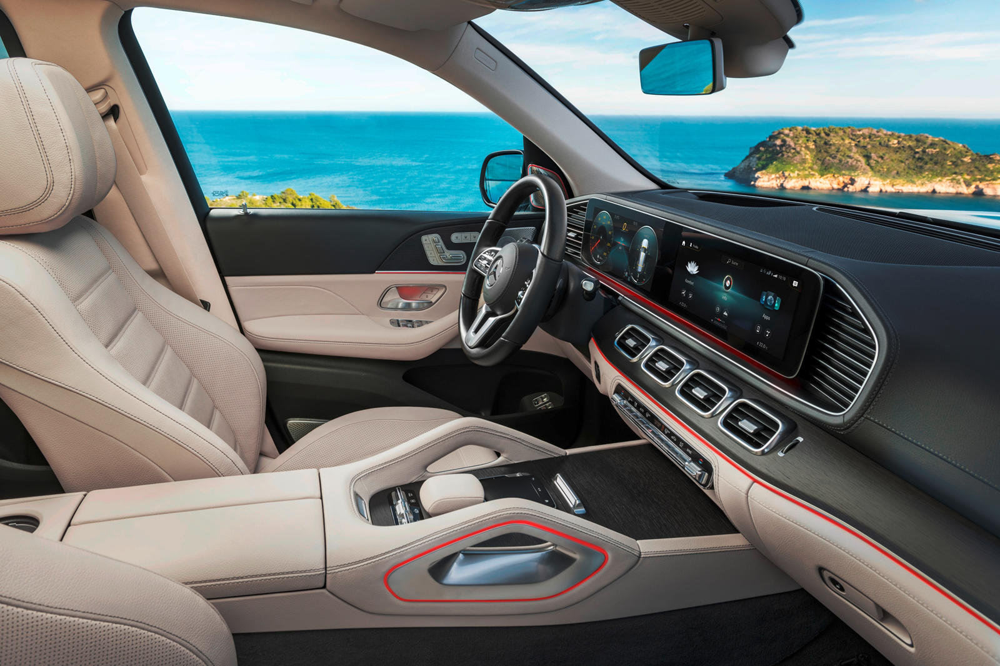
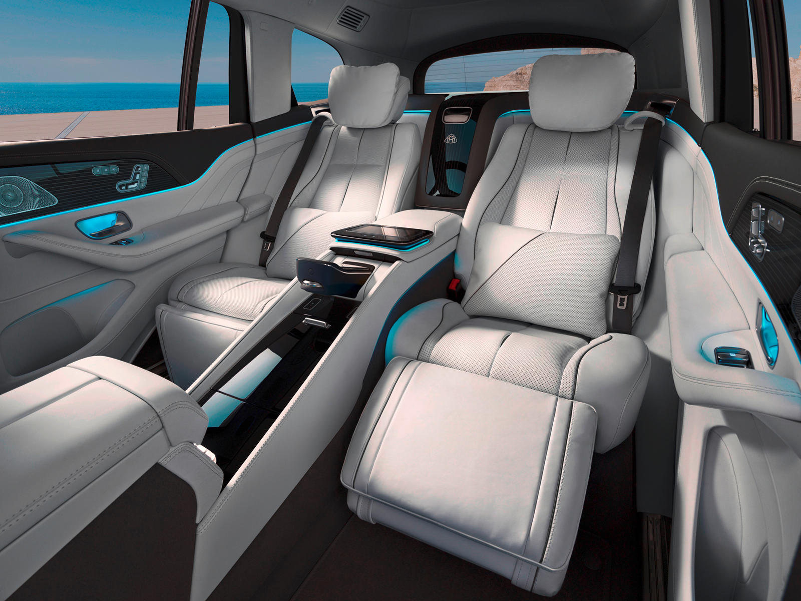
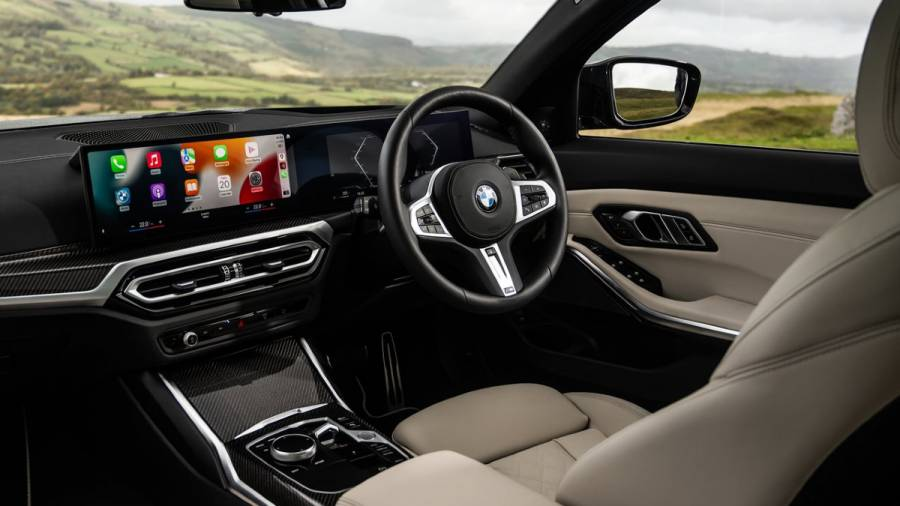

Home |
German Cars |
About |
|---|
BMW's Most expensive car equppied with a 6.6L V12. It is the most luxurious bmw and it shares the same engine as the Rolls Royce Phantom. The M760Li competes with the Mercades-Benz S63.
One of Mercades best SUV, it features a Twin turbo charged mild hybrid V8. There are 4 trims, Starting at 83,000 and maxing out at 172,000. The starting trim only has a V6 but when you go to the 580 model you get a V8. After the 580 is the 63 which is the sport one, the Maybach is a super luxurious and sporty Sport Utillity Vehicle. It also competes with the Rolls Royce Cullinan.
 The m340i is a very sporty luxe mid size sedan. It has a Turbo 3.5L V6. It shares the same engine and chasis with the new Toyota Supra. It is a nice option for a fast sedan that is cheaper than the M3.
